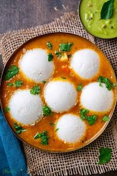
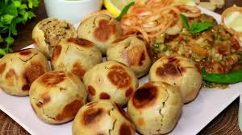

Flavors of South, North, East and West India
South Indian Food
Known for dishes like dosa, idli, sambar, and coconut-based curries.
North Indian Food

Famous for rich gravies, naan, paneer dishes, and tandoori items.
East Indian Food
Includes sweets like rasgulla and sandesh, and many fish and rice dishes.
West Indian Food

Contains tangy and spicy foods such as dhokla, pav bhaji, and Goan curries.